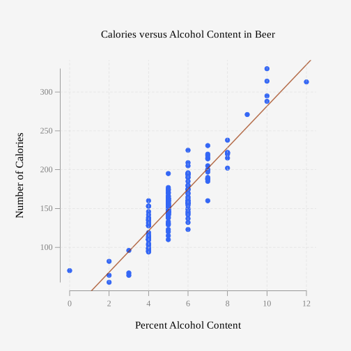
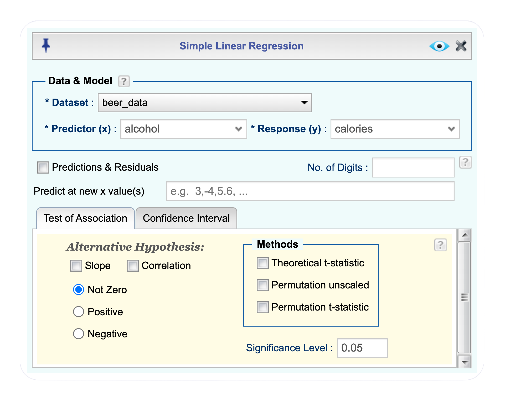
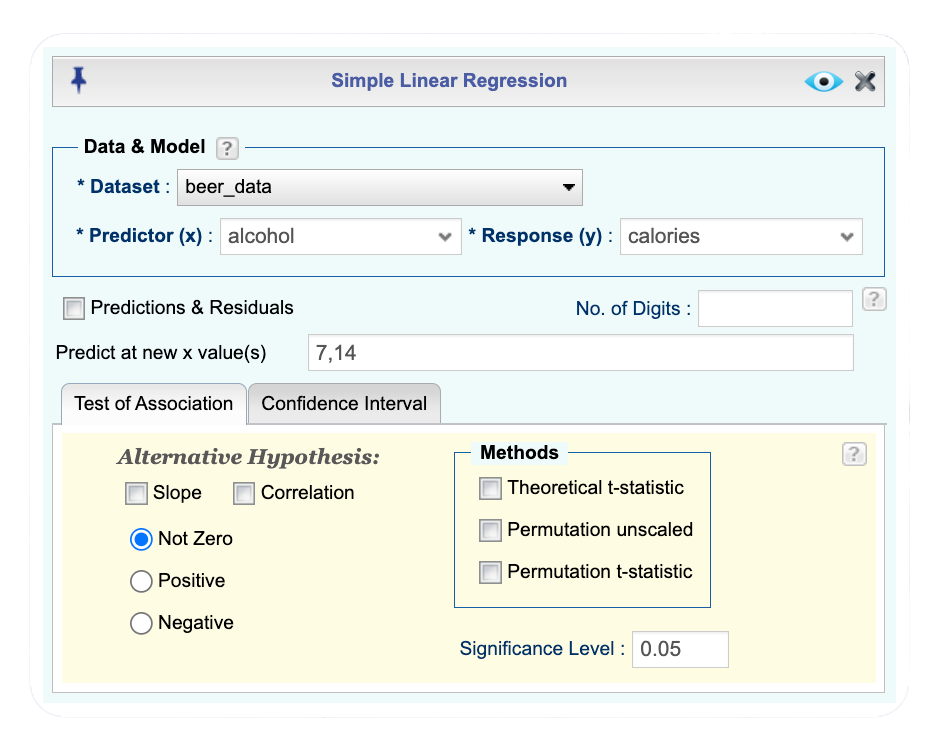
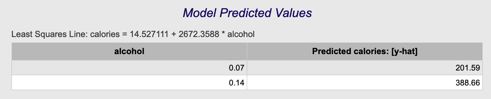
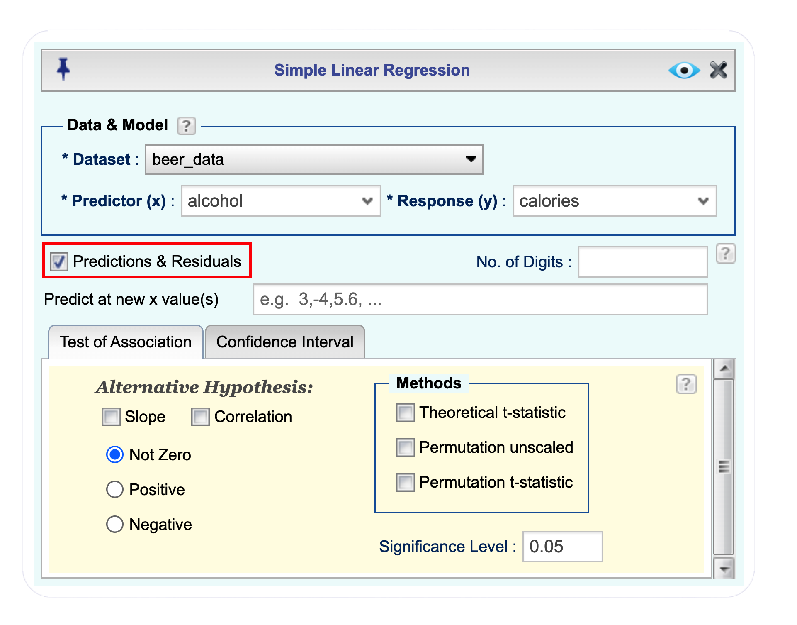
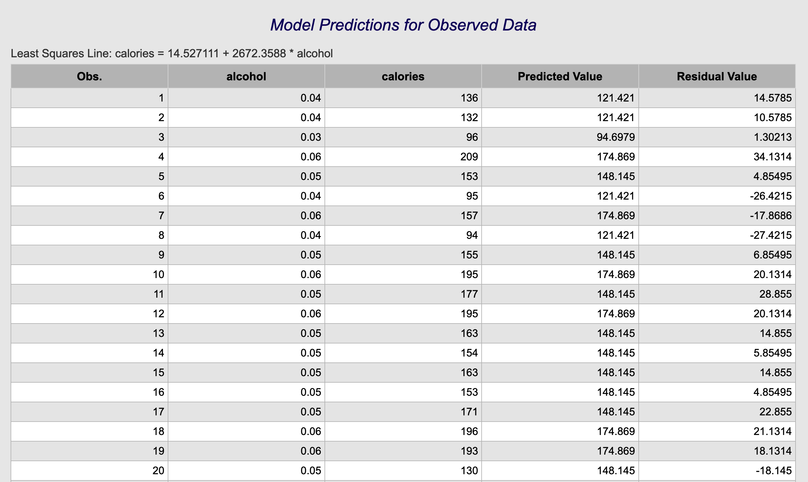
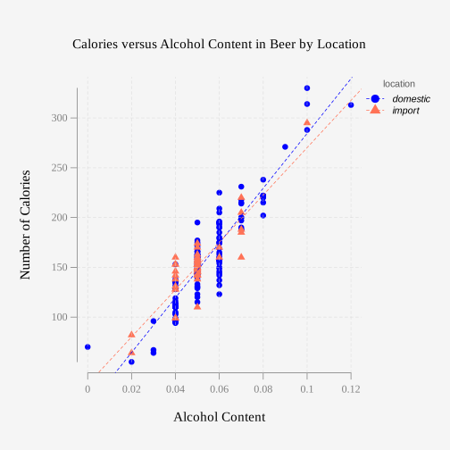
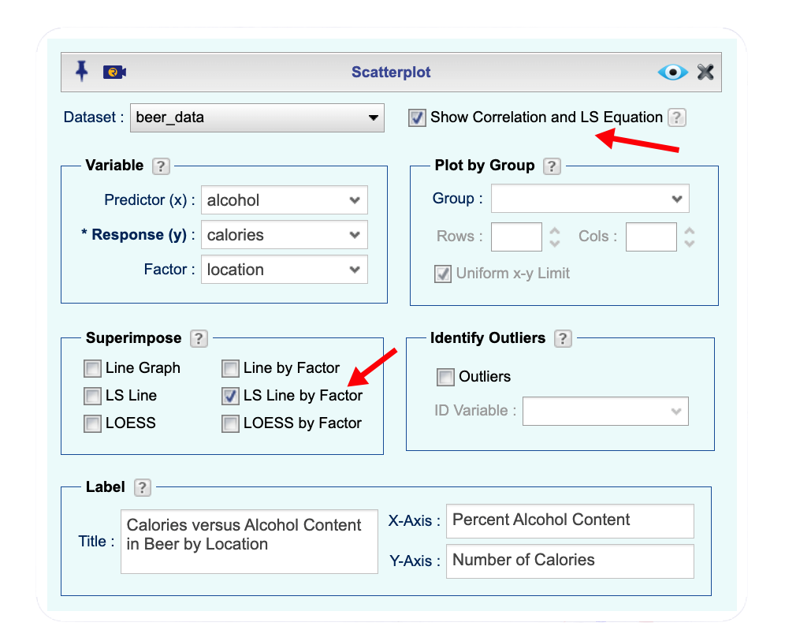
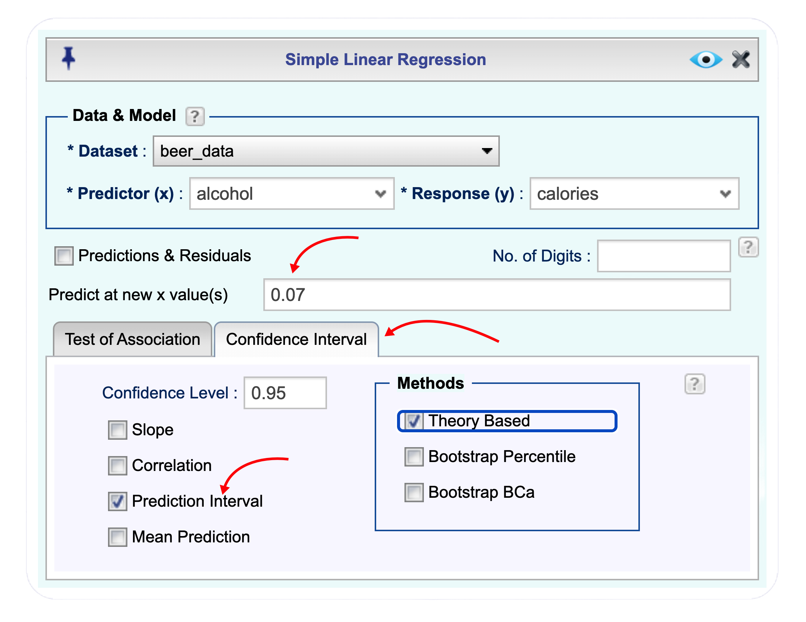
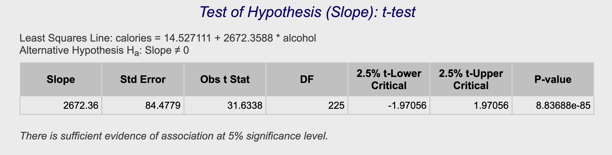

| X | beer | brewery | location | alcohol | calories | carbs |
|---|---|---|---|---|---|---|
| 1 | American Amber Lager | Straub Brewery | domestic | 4 | 136 | 10.5 |
| 2 | American Lager | Straub Brewery | domestic | 4 | 132 | 10.5 |
| 3 | American Light | Straub Brewery | domestic | 3 | 96 | 7.6 |
| 4 | Anchor Porter | Anchor | domestic | 6 | 209 | NA |
| 5 | Anchor Steam | Anchor | domestic | 5 | 153 | 16.0 |
| 6 | Anheuser Busch Natural Light | Anheuser Busch | domestic | 4 | 95 | 3.2 |
10 Regression
Before you begin, Click to expand the box below to review the process for importing a dataset.
- Open the Data toolbox in Rguroo.
- From the Data Import dropdown, select Dataset Repository.
- In the top search box, type kozak, then select the Statistics Using Technology – Kozak repository.
- In the middle search box, type the first few letters of the dataset name, and choose your desired dataset name that appears in the lower panel.
- Click the . The dataset will be imported to your Rguroo account.
- Click to exit the dialog.
- To view the dataset, double-click the dataset name under the Data toolbox list.
The previous chapter focused on comparing populations to determine whether there is a difference between them by examining two variables that measured the same or very similar quantities. In this chapter, we shift our focus to situations where the variables do not need to measure the same thing. Instead of comparing groups, we investigate whether a relationship exists between two or more variables. To study this relationship, we use regression to model the linear relationship between variables and correlation to measure the strength and direction of that linear relationship.
There are many types of relationships that can exist between variables, not just linear ones. In this book, we will focus only on linear relationships. However, it is important to recognize that other types of relationships can also be used to describe and model data, depending on the situation.
10.1 Regression
10.1.1 Introduction to Regression and Correlation
When comparing different variables, two questions naturally arise: “Is there a relationship between the variables?” and “How strong is that relationship?” These questions can be answered using regression and correlation. Regression helps determine whether a relationship exists (in this book, we focus only on linear relationships), while correlation measures the strength of the linear relationship.
To better understand these ideas, it is helpful to clearly define the roles the variables play in this analysis. The response variable is the variable whose variability we are trying to explain or predict. The variable used to explain the change (or variability) in the response variable is called the explanatory variable or predictor variable. More generally, any variables that help explain changes in a response variable are referred to as predictors or covariates. To introduce the concepts of regression and correlation more fully, it is helpful to examine a set of data.
Example 10.1 (Determining if There is a Relationship) Is there a relationship between the alcohol content and the number of calories in a 12-ounce beer? To determine whether such a relationship exists, we examine a dataset of 227 beers that includes their alcohol content and calorie counts (Find Out How Many Calories in Beer?, 2019).
 The dataset for this example is available in the Rguroo dataset repository Kozak, with the dataset name beer_data. Table Table 10.1 displays the first five rows of the dataset. A complete description of the variables is provided in the dataset code book that follows.
The dataset for this example is available in the Rguroo dataset repository Kozak, with the dataset name beer_data. Table Table 10.1 displays the first five rows of the dataset. A complete description of the variables is provided in the dataset code book that follows.
Code book for Dataset Beer
Description Collection of the most popular beers from large breweries. The data is of the calories, carbs and alcohol of a specific beer. The data is shown for a 12 ounce serving. The collection includes both domestic and import beer. For the imported beers the information is per 12 oz. serving even though many imports come in pints.
This dataset contains the following columns:
beer: The name of the beer.
brewery: the brewery that brews the beer.
location: whether the beer is brewed in the U.S. (domestic) or brewed in another country (import).
alcohol: the percent alcohol content of the beer.
calories: the number of calories in the beer.
carbs: the amount of carbohydrates in the beer (g).
Source: Find Out How Many Calories in Beer? (n.d.). Retrieved July 21, 2019. (https://www.beer100.com/beer-calories)
References: (Find Out How Many Calories in Beer?, 2019)
Solution
To aid in figuring out if there is a relationship between the alcohol content and the number of calories, it helps to draw a scatterplot of the data. First, it is helpful to clearly state the variables. Following the convention used in algebra, we represent the variables as \(x\) and \(y\), where \(x\) denotes the explanatory (or predictor) variable and \(y\) denotes the response variable.
In this example,
\(x\) = percent alcohol content in the beer; alcohol
\(y\) = number of calories in 12 ounce beer; calories
Before you begin: Make sure you have already imported the beer_data dataset into your Rguroo account, as shown here.
- Open the Plots toolbox in Rguroo.
- Open the Create Plot dropdown and select scatterplot. This opens the scatterplot dialog.
- In the scatterplot dialog, choose the beer_data dataset from the Dataset dropdown.
- Choose the alcohol variable from the Predictor (x) dropdown.
- Choose the calories variable from the Response (y) dropdown.
- In the Label section of the dialog:
- Enter Calories versus Alcohol Content in Beer in the Title textbox.
- Enter Percent Alcohol Content in the X-Axis textbox.
- Enter Number of Calories in the Y-Axis textbox.
- Enter Calories versus Alcohol Content in Beer in the Title textbox.
- Click the preview icon
 to see a preview of the scatterplot.
to see a preview of the scatterplot. - In the
 textbox, enter the name AlcoholCalorieScatter for the scatterplot. Click the button to save the scatterplot to your Rguroo account.
textbox, enter the name AlcoholCalorieScatter for the scatterplot. Click the button to save the scatterplot to your Rguroo account.
Click here to see the Rguroo dialog


The scatterplot shown in Figure 10.1 looks fairly linear, meaning the points tend to fall along a straight-line pattern rather than a curved one.
10.1.2 Finding the regression line
To describe the linear relationship between two quantitative variables, we use a statistical method called regression to find the straight line that best fits the data points on a scatterplot. This line, called the regression line, provides an equation that summarizes how the response variable changes as the explanatory variable changes.
To determine this line, we imagine drawing a line through the data and measuring the vertical distance from each point to the line. These vertical distances are called residuals. The regression line is the line that makes the sum of the squares of these residuals as small as possible. For this reason, it is also called the least squares line. Figure 10.2 displays the regression line on the scatterplot of Number of Calories versus Alcohol Content.

To add a regression (least squares) line to the scatterplot in Rguroo, you simply select the checkbox LS Line in the superimpose section of the Scatterplot dialog, as shown in Figure 10.3.

Given a collection of paired sample data, the regression equation is
\[\hat{y}=b + mx\]
where \(m\) is the slope of the line and the point \((0,b)\) is the \(y\)-intercept. The independent variable (\(x\)) is the explanatory, or predictor, variable; it is used to explain or predict changes in another variable. The dependent variable (\(y\)) is the response variable; its value changes in response to the predictor. The quantity \(\hat y\) is called the predicted value or the fitted value for a given value of \(x\).
In our example, alcohol content is the predictor (independent, \(x\)) variable, and number of calories is the response (dependent, \(y\)) variable, since it is more reasonable to predict calories from alcohol content than the other way around.
The residuals are the difference between the actual observed values of the response and the corresponding estimated (predicted) values, namely
\[\text{residual} = y - \hat{y}.\]
As we will show, the Linear Regression function in the Analytics toolbox is used in Rguroo to fit a linear model, producing both the equation of the regression line and the associated fitted values and residuals.
10.1.3 The Regression Equation and Prediction
In this section, we learn how to find the equation of the regression line and use it to make predictions. The regression equation describes the relationship between the explanatory variable and the response variable, allowing us to estimate the value of the response for a given value of the explanatory variable.
Example 10.2 (Find the Equation of the Regression Line) Is there a relationship between the alcohol content and the number of calories in 12-ounce beer? To determine if there is one, we examine the sample of beer’s alcohol content and calories, portion of which is shown in Table 10.1.
- Find the regression equation between alcohol content and calories.
- Interpret the slope and the intercept in the context of the problem.
- Use the regression equation to find the number of calories when the alcohol content is 7%. This is the predicted value or the fitted value at \(x=7\).
- Use the regression equation to find the number of calories when the alcohol content is 14%.This is the predicted value or the fitted value at \(x=14\).
Solution
a. Finding the regression equation
To find the regression equation between alcohol content and calories we first determine our \(x\) and \(y\) variables. As in Example 10.1, \(x\) is the alcohol content and \(y\) is the number of calories in a 12 ounce beer.
Click to expand the box below to see how to obtain the regression equation.
Before you begin: Make sure you have already imported the beer_data dataset into your Rguroo account, as shown here.
- Open the Analytics toolbox in Rguroo.
- Open the Analysis dropdown and select Linear Regression → Simple Regression. This opens the Simple Linear Regression dialog.
- From the Dataset dropdown, choose the beer_data dataset.
- From the Predictor (x) dropdown, choose the alcohol variable.
- From the Response (y) dropdown, choose the calories variable.
- Click the preview icon to view a preview of the regression results.
- Click the button to save the regression results as AlcoholCalorieRegress.
Click here to see the Rguroo dialog

Rguroo output: Linear Regression for Beer Data
The following table shows a portion of the Rguroo output for this regression analysis.

The table provides summary information about the regression analysis. In particular, the last row, labeled “Equation of Least Squares Line,” shows the equaition of the regression line which includes the estimated slope and \(y\)-intercept. In the displayed equation, calories is written in place of \(y\) and alcohol in place of \(x\).
From the output (rounding the values), the slope is 26.7 and the \(y\)-intercept is 14.5. Therefore, the regression equation is
\[\hat{y} = 14.52 + 26.72\ x,\]
where \(x\) represents alcohol content and \(\hat{y}\) represents the predicted number of calories for a given value of \(x\).
Remember, this equation that we calculated is only an estimate of the true relationship in the population. A different sample of beers would likely produce a slightly different regression equation.
b. Interpreting the slope and the intercept
What does the slope mean in the context of this problem?
The value of the slope in the equation of a line indicates the amount of change in \(y\) for every one-unit increase in \(x\). Therefore, in the context of our example, the slope of 26.7 indicates that for every 1% increase in alcohol content (\(x\)), the number of calories (\(y\)) increases by about 26.7.
The value of the \(y\)-intercept indicates the value of \(y\) when \(x\) is equal to zero. In many cases, the \(y\)-intercept obtained from a regression equation is not meaningful in context. In this case, it suggests that if a drink has 0% alcohol content, then on average it would have about 14.5 calories, which may be a reasonable value.
c. Predicting calories when the alcohol content is 7%
To make a prediction, we substitute the given alcohol content (as a percent) into the regression equation and compute the corresponding fitted value. In this example, we want to predict the number of calories for a beer with 7% alcohol content. Therefor we perform the following calculation: \[ \hat{y} = 14.52 + 26.72 \times 7 = 201.56. \]
This value, 201.56, is the predicted number of calories for a beer whose alcohol content is 7%. So, if you are drinking a beer that has 7% alcohol content, then it probably has close to 202 calories.
Considering all the data, the mean number of calories is 154.5. However, for beers with 7% alcohol content, the predicted value of 201 calories is a more appropriate estimate because the beers in the dataset with 7% alcohol all have between 160 and 231 calories. Thus, when estimating calories for a specific alcohol content, the regression equation provides a more relevant and accurate estimate than simply using the overall mean.
d. Predicting calories when the alcohol content is 14%
Again, to predict the number of calories for a beer with alcohol conten of 14%, we pluggin 14 for \(x\) in the regression equation.
\[\hat{y} = 14.52 + 26.72 \times 14 = 388.6.\]
Thus, based on our estimated regression equation, a beer with 14% alcohol content is predicted to have about 389 calories, on average.
You can also use Rguroo to obtain predicted values for specified value of \(x\). For example, to get the predicted values for alcohol contents of 7% and 14%, enter 7 and 14 (separated by a comma) in the textbox labeled Predict at new x value(s) in the Simple Linear Regression dialog as shown in Figure 10.4 below.

The predicted values from Rguroo are shown in Figure 10.5 below. These values are very close to the ones we calculated using the formula. The small differences are due to the fact that we rounded the slope and intercept to two decimal places, while Rguroo uses many more decimal places in its calculations.

10.1.4 Extrapolation and Interpolation
If you are drinking a beer that is 14% alcohol content, our regression equation predicts that it would have about 388 calories. Since a 12% alcohol beer has about 330 calories on average, it makes sense that a 14% beer would be expected to have more calories. However, the highest alcohol content in our dataset is 12%, so a prediction at 14% is outside the range of the observed data in our dataset. The estimate for a 14% beer is therefore an example of extrapolation, because it is a prediction for an \(x\)-value outside the range of the data used to fit the model. It is not a good idea to predict values that fall far outside the range of the original data, because we cannot be sure that the regression relationship remains valid beyond the observed \(x\)-values.
Notice that 7% alcohol is within the range of the original \(x\)-values. Predicting a value for an \(x\)-value inside the observed range is called interpolation. When you interpolate, you can usually feel confident that the predicted value will be close to the true value because the model was created using data within that range and is intended to describe relationships only there. When you extrapolate, however, you cannot be sure the prediction is close to the true value, because the relationship may change for \(x\)-values beyond those observed when the model was created.
To see how extrapolation can lead to unreasonable results, consider the relationship between age and height. This relationship is approximately linear only during middle childhood, roughly between ages 2 and 10. During this age range, a reasonable linear model might be
\[y = 30 + 2.5\ x,\]
where \(x\) is age (in years) and \(y\) is height (in inches).
In this equation, the slope of 2.5 means that height increases by about 2.5 inches for each additional year of age, and the intercept of 30 represents the predicted height at age 0. While this equation may give reasonable predictions for children between ages 2 and 10, using it outside this range (for example, to predict the height of a 25-year-old) would give unrealistic results.
For example, to predict the height of a child who is 6 years old (an interpolation because 6 is within the 2–10 range), we substitute the value of Age \(x= 6\) into the equation:
\[\hat y = 30 + 2.5 \times 6 = 45 \mbox{ inches.}\]
However, using the same model to predict height at age 30 represents an extrapolation, since age 40 is far outside the range where the linear relationship holds. Substituting \(x = 40\) gives:
\[\hat y = 30 + 2.5 × 40 = 130 \mbox{ inches,}\]
a clearly unrealistic value. This illustrates why extrapolation can lead to misleading conclusions.
It is interesting to note that this is an example where the \(y\)-intercept is not meaningful. The \(y\)-intercept is 30 inches, which would be the predicted height of a newborn baby (age 0). This is not a reasonable value since newborn babies are typically about 20 inches long.
10.1.5 Understanding and Interpreting Residuals
Let’s become more familiar with residuals. As defined earlier, a residual is the difference between an observed value and its predicted value from the regression equation:
\[\mbox{residual} = y - \hat{y} = \mbox{observed value} - \mbox{predicted value}.\]
To see what this means in context, consider beers with 7% alcohol content. Our regression model predicts 202 calories for a beer with 7% alcohol. In the dataset, however, beers with 7% alcohol have calorie counts ranging from 160 calories (Thos Cooper & Sons Real Ale) to 231 calories (Sierra Nevada India Pale Ale). For Thos Cooper & Sons Real Ale, the residual is approximately −42 calories (\(160 - 202 = -42\)), meaning the beer has about 42 fewer calories than predicted. For Sierra Nevada India Pale Ale, the residual is 29 calories (\(231 - 202 = 29\)), meaning it has 29 more calories than predicted. These differences between the observed and predicted values are the residuals.
Residuals occur because there is natural variability in the response variable. Not every beer with the same alcohol content will have exactly the same number of calories. When residuals are small, the model’s predictions are close to the observed values for those observations. When residuals are large, the predictions are farther from the observed values, indicating that the model does not fit those observations as well.
As we see in Section 10.1.7, because residuals represent the unexplained variation in the response variable, examining them carefully helps us determine whether a linear regression model is appropriate.
10.1.6 Computing Predicted Values and Residuals in Rguroo
Rguroo calculates \(\hat y\), the fitted values and residuals for each observed data value. Continuing with the Rguroo instructions for fitting the regression equation to the beer data, shown here, selecting the checkbox Predictions & Residuals in the Simple Linear Regression dialog produces a table containing the predicted (fitted) values (column labeled Predicted Value) and the residuals (column labeled Residual Value). The dialog box used for this step is shown in Figure 10.6, and the Rguroo output, containing the fitted values and residuals for the first 20 cases of the beer data is given in Table 10.3. It is these values that are plotted in the residual-versus-fit plot Figure 10.7 that we will use in Section 10.1.7 to check validity of the regression model.


10.1.7 Checking Validity of the the Regression Equation
Before using a least squares regression equation to make predictions or draw conclusions, it is important to verify that the model is appropriate for the data. The regression equation is intended to describe the relationship in the population, not just the sample. To confidently generalize results and rely on the equation for prediction, certain assumptions must be satisfied.
Two assumptions must hold for the least squares regression equation to be valid: randomness and linearity.
Randomness
For the linear regression model to be valid, the set of ordered pairs should be a random sample from the population of all such possible pairs.
The assumption of randomness ensures that the data are representative of the population and that the observed relationship is not the result of a systematic bias in how the data were collected. If the data are not obtained randomly—for example, if certain observations are more likely to be included than others—then the regression results may not generalize beyond the observed data.
For the beer data, do we have a random sample of alcohol content and calories? There is no guarantee that this was a random sample. The data was collected from a website, and the website does not explain how the data was obtained. However, the dataset consists primarily of popular beers from large breweries. Since the goal is to examine the relationship between alcohol content and calories, the lack of randomness may be less concerning for identifying an association. It mainly limits how broadly we can generalize the results to all beers.
Linearity
The assumption of linearity means that the relationship between the explanatory variable and the response variable can be reasonably described by a straight line. In particular, for any given \(x\)-value, the average (mean) of the corresponding \(y\)-values should lie on, or very close to, the least squares regression line. This does not mean that all points fall on the line, but that the overall trend in the data follows a linear pattern.
The assumption of linearity is essential. If the relationship between the two variables is not linear, then a regression line will not fit the data well. To check linearity, we look at the scatterplot: a roughly straight-line pattern suggests the assumption is reasonable, while a curved pattern suggests it is not.
Figure 10.1 shows the scatterplot of calories versus alcohol content for the beer data. This graph is also shown as part of the default output of the Linear Regression function in Rguroo. This scatterplot looks fairly linear, so this condition appears to be satisfied.
A residual-versus-fit plot provides another way to check the linearity assumption. This plot displays the residual for each observed data point on the vertical axis and its corresponding predicted value (fit) on the horizontal axis. In other words, each point represents how far an observed value is from the regression line at a particular predicted value. This plot is especially useful when it is difficult to determine whether a linear relationship exists by simply examining the scatterplot of \(y\) versus \(x\).
If, on a residual-versus-fit plot, the residuals are randomly scattered around the horizontal line at \(y = 0\) with no clear pattern, then the linearity assumption is likely reasonable. However, if the residuals display a systematic pattern—such as a curved shape—this indicates that the relationship between the variables may not be linear and that the linearity assumption is likely violated.
Figure 10.7 shows the residual-versus-fit plot for the beer data, which is also part of the Linear Regression function output in Rguroo. Each point represents one beer: its horizontal position is the predicted number of calories, and its vertical position is the residual (observed calories minus predicted calories). The points appear to be randomly scattered around the horizontal line at zero. The green curve in the plot is a so-called loess smooth that summarizes the overall pattern of the residuals. The curve is mostly flat, although it bends slightly near the ends due to a few observations with larger residuals. Small deviations from a flat line that are caused by a few mild outliers are typically not a serious concern. There is no clear overall curved pattern in the plot, suggesting that the linearity condition is reasonably satisfied.

The \(y\)-intercept for the imported beers is 32.5, which is larger than the y-intercept for domestic beers, 9.4. The slopes of the two lines are relatively close, with the slope for domestic beers equal to 27.5 and the slope for imported beers equal to 23.7.
10.1.8 Regression with Groups
In some situations, the relationship between an explanatory variable and a response variable may differ across categories of a third variable. When we fit and compare regression models separately for different groups as seperated by a categorical variable, this is called regression by group. This approach is useful when we want to determine whether the relationship between \(x\) and \(y\) differs depending on group membership—for example, whether the slope, intercept, or overall pattern differs across categories.
As an example, in the beer dataset, we might wonder whether the relationship between calories and alcohol content differs for imported and domestic beers. The location variable has two values, imported and domestic, indicating whether each beer is imported or domestic. This variable is a covariate, a third variable that may affect calorie content or the relationship between calories and alcohol content. A covariate that is categorical is referred to as a factor. You can create a scatterplot that displays the data separately for each category of this factor.
Click to expand the box below to see how to create a scatterplot of calories vs. alcohol content separated by he factor location.
Before you begin: Make sure you have already imported the beer_data dataset into your Rguroo account, as shown here.
- Open the Plots toolbox in Rguroo.
- Open the Create Plot dropdown and select scatterplot. This opens the scatterplot dialog.
- In the scatterplot dialog, choose the beer_data dataset from the Dataset dropdown.
- Choose the alcohol variable from the Predictor (x) dropdown.
- Choose the calories variable from the Response (y) dropdown.
- Choose the location variable from the Factor dropdown.
- In the superimpose section of the dialog, select the checkbox LS Line by Factor.
- In the Label section of the dialog:
- Enter Calories versus Alcohol Content in Beer by Location in the Title textbox.
- Enter Percent Alcohol Content in the X-Axis textbox.
- Enter Number of Calories in the Y-Axis textbox.
- Enter Calories versus Alcohol Content in Beer by Location in the Title textbox.
- Click the preview icon to see a preview of the scatterplot.
- In the textbox, enter the name AlcoholCalorieLocationScatter for the scatterplot. Click the button to save the scatterplot to your Rguroo account.
Click here to see the Rguroo dialog


Figure 10.8 shows the scatterplot of calories versus alcohol content separated by location (imported versus domestic). The legend indicates that domestic beers are represented by circles with a dashed regression line, while imported beers are represented by triangles with a dashed regression line. Each group has its own least squares line shown on the plot.
Looking at the scatterplot, there does not appear to be a substantial difference between domestic and imported beers in terms of the relationship between alcohol content and calories. This illustrates one of the strengths of scatterplots: they allow us to visually assess potential relationships and compare patterns across groups.
We can also obtain the regression equation for each level of a factor separately in Rguroo. The quickest way to display these equations is to select the checkbox Show Correlation and LS Equation in the Scatterplot dialog, as shown in @scatterplot_dialog_LS_factor.

Using the options shown in the dialog above, we obtain the following regression equations, which appear at the top of the scatterplot for the domestic and imported beers:

10.1.9 Homework for Regression Section
For each problem, state the variables. The datasets in this section are also used in the homework for sections 10.2 and 10.3.
When an anthropologist finds skeletal remains, one task is to estimate the person’s height. Data on height (in cm) and the length of metacarpal bone 1 (in mm) were collected and are shown in Table 2.14 (“Prediction of Height,” 2013).
Create a scatterplot with metacarpal length on the horizontal axis (x-axis) and height on the vertical axis (y-axis). Then draw the least squares regression line on the same graph so that you can see how well the line fits the data. Does the pattern look approximately linear.
Determine the least squares regression equation relating height to metacarpal length.
Use the regression equation to predict the height of a person with a metacarpal length of 45 mm and with a metacarpal length of 51 mm.
In the dataset, locate the recorded heights corresponding to metacarpal lengths of 45 mm and 51 mm. Using these observed values, compute the residuals for both cases. Which of the two predicted heights do you think is closer to the person’s actual height? Explain your reasoning.
 The dataset for this exercise is available in the Rguroo dataset repository Kozak, with the dataset name height_vs_metacarp.
The dataset for this exercise is available in the Rguroo dataset repository Kozak, with the dataset name height_vs_metacarp.
Code book for Dataset Metacarpal is below Table 2.14.
Table 2.15 contains a portion of the dataset house that contains data on house value and the annual rental income each house generates (“Capital and Rental,” 2013).
Create a plot of rental income versus house value. Place house value on the horizontal axis and annual rental income on the vertical axis. Label both axes clearly. Do the points appear to follow a linear pattern?
Determine the least squares regression equation relating rental income to house value. Write the equation in the form \(\hat y = b + mx\).
Using the regression equation, compute the predicted rental income for houses valued at $214,000 and $325,000.
Locate the corresponding observed rental incomes in house dataset and compute the residuals for both houses valued at $214,000 and $325,000. Which predicted rental income is closer to the actual rental income observed in the data? why?
Use the least squares regression equation to predict the annual rental income for a house worth $700,000. Compare $700,000 to the range of house values in the dataset. Do you think this prediction is reliable? Explain why or why not.
State the value of the slope. Interpret the slope in context by describing how much rental income changes, on average, for every $10,000 increase in house value.
Interpret the intercept in context. Is the intercept meaningful in this situation? Explain.
 The dataset for this exercise is available in the Rguroo dataset repository Kozak, with the dataset name house.
The dataset for this exercise is available in the Rguroo dataset repository Kozak, with the dataset name house.
Code book for Dataset House is below Table 2.15.
Table 2.16 contains a portion of the dataset Life_exp_fert_rate which contains data from 2011 on fertility rate (births per woman) and life expectancy (in years) for various countries (“Life Expectancy At,” 2013; “Fertility Rate,” 2013).
Create a plot of life expectancy versus fertility rate. Place fertility rate on the horizontal axis and life expectancy on the vertical axis. Label both axes clearly. Do the points appear to follow a linear pattern?
Determine the least squares regression equation relating life expectancy to fertility rate. Write the equation in the form \(\hat y = b + mx\).
Use the regression equation to predict the life expectancy for a country with a fertility rate of 3 and for a country with a fertility rate of 8.1.
Compare the values 3 and 8.1 to the range of observed fertility rates in the dataset. Which prediction do you think is more reliable? Why?
 The dataset for this exercise is available in the Rguroo dataset repository Kozak, with the dataset name Life_exp_fert_rate.
The dataset for this exercise is available in the Rguroo dataset repository Kozak, with the dataset name Life_exp_fert_rate.
Code book for Dataset Fertility is below Table 2.16.
The World Bank collected data on the percentage of gross domestic product (GDP) that a country spends on health expenditures (Current health expenditure (% of GDP), 2019), the fertility rate of the country (Fertility rate, total (births per woman), 2019), and the percentage of women receiving prenatal care (Pregnant women receiving prenatal care (%), 2019). The dataset for the countries where this information is available is fertility_prenatal, part of which is shown in Table 2.17.
Create a plot of percentage of women receiving prenatal care versus percentage of GDP spent on health expenditures. Place health expenditure percentage on the horizontal axis and prenatal care percentage on the vertical axis. Label both axes clearly. Do the points appear to follow a linear pattern?
Determine the least squares regression equation relating prenatal care percentage to health expenditure percentage. Write the equation in the form \(\hat y = b + mx\).
Use the regression equation to predict the percentage of women receiving prenatal care for a country that spends 5% of its GDP on health expenditures.
Use the regression equation to predict the percentage of women receiving prenatal care for a country that spends 12% of its GDP on health expenditures.
Compare 5% and 12% to the range of health expenditure percentages in the dataset. Which of the two predicted prenatal care percentages do you think is more reliable? Explain your reasoning.
 The dataset for this exercise is available in the Rguroo dataset repository Kozak, with the dataset name fertility_prenatal.
The dataset for this exercise is available in the Rguroo dataset repository Kozak, with the dataset name fertility_prenatal.
Code book for Dataset Fert_prenatal is below Table 2.17.
The height and weight of baseball players are given in baseball dataset, part of which is shown in Table 10.5 (“MLB heightsweights,” 2013).
Create a plot of weight versus height. Place height (in inches) on the horizontal axis and weight (in pounds) on the vertical axis. Label both axes clearly. Do the points appear to follow a linear pattern?
Determine the least squares regression equation relating weight to height. Write the equation in the form \(\hat y = b + mx\).
Use the regression equation to predict the weight of a baseball player who is 75 inches tall.
Use the regression equation to predict the weight of a baseball player who is 68 inches tall.
Compare 75 and 68 to the range of observed heights in the dataset. Which predicted weight do you think is closer to the true weight? Why?
 The dataset for this exercise is available in the Rguroo dataset repository Kozak, with the dataset name baseball.
The dataset for this exercise is available in the Rguroo dataset repository Kozak, with the dataset name baseball.
| player | height | weight |
|---|---|---|
| 1 | 65.78 | 112.99 |
| 2 | 71.52 | 136.49 |
| 3 | 69.40 | 153.03 |
| 4 | 68.22 | 142.34 |
| 5 | 67.79 | 144.30 |
| 6 | 68.70 | 123.30 |
Code book for Dataset Baseball
Description
The heights and weights of MLB players.
Format
This Dataset contains the following columns:
Player: Player in the sample
height: height of baseball player (inches)
weight: weight of baseball player (pounds)
Source MLB heightsweights. (2013, November 16).
References SOCR Dataset of MLB Heights Weights from UCLA.
Data on body weights and brain weights are given in the dataset body, part of which is shown in Table 10.6 (“Brain2bodyweight,” 2013).
Create a plot of brain weight versus body weight. Place body weight (in kg) on the horizontal axis and brain weight (in g) on the vertical axis. Label both axes clearly. Do the points appear to follow a linear pattern?
Determine the least squares regression equation relating brain weight to body weight. Write the equation in the form \(\hat y = b + mx\).
Use the regression equation to predict the brain weight for a species that has a body weight of 62 kg.
Use the regression equation to predict the brain weight for a species that has a body weight of 180,000 kg.
Compare 62 and 180,000 to the range of observed body weights in the dataset. Which predicted brain weight do you think is closer to the true brain weight? Why?
 The dataset for this exercise is available in the Rguroo dataset repository Kozak, with the dataset name body.
The dataset for this exercise is available in the Rguroo dataset repository Kozak, with the dataset name body.
| species | bodyweight | brainweight | brainbodyproportion |
|---|---|---|---|
| Newborn_Human | 3.20 | 0.3749848 | 0.1171828 |
| Adult_Human | 73.00 | 1.3499816 | 0.0184929 |
| Pithecanthropus_Man | 70.00 | 0.9250109 | 0.0132144 |
| Squirrel | 0.80 | 0.0076204 | 0.0095254 |
| Hamster | 0.15 | 0.0014061 | 0.0093742 |
| Chimpanzee | 50.00 | 0.4199812 | 0.0083996 |
Code book for Dataset Body
Description
The body weight, brain weight, and brain/body proportion of different species of animals.
Format
This Dataset contains the following columns:
species: species of animal
bodyweight: the body weight of the species (kg)
brainweight: the brain weight of the species (kg)
brainbodyproportion: the ratio of brain weight to body weight of the species
Source Brain2bodyweight. (2013, November 16). Retrieved from http://wiki.stat.ucla.edu/socr/index.php/SOCR_Data_Brain2BodyWeight
References SOCR Data of species body weights and brain weights from UCLA.
A sample of hot dogs was taken and the amount of sodium (in mg) and calories were measured and recorded in the dataset hotdog (“Data hotdogs,” 2013). The first six rows of the dataset are shown in Table 10.7.
Create a plot of sodium versus calories. Place calories on the horizontal axis and sodium (in mg) on the vertical axis. Label both axes clearly. Do the points appear to follow a linear pattern?
Determine the least squares regression equation relating sodium to calories. Write the equation in the form \(\hat y = b + mx\).
Use the regression equation to predict the amount of sodium in a hot dog that has 170 calories.
Use the regression equation to predict the amount of sodium in a hot dog that has 120 calories.
Compare 170 and 120 to the range of observed calorie values in the dataset. Which predicted sodium level do you think is closer to the true sodium level? Why?
What is the slope of the regression equation? Interpret the slope in the context of the problem.
What is the \(y\)-intercept? Interpret it in the context of the problem. Is your interpretation practically meaningful?
 The dataset for this exercise is available in the Rguroo dataset repository Kozak, with the dataset name hotdog.
The dataset for this exercise is available in the Rguroo dataset repository Kozak, with the dataset name hotdog.
| type | calories | sodium |
|---|---|---|
| Beef | 186 | 495 |
| Beef | 181 | 477 |
| Beef | 176 | 425 |
| Beef | 149 | 322 |
| Beef | 184 | 482 |
| Beef | 190 | 587 |
Code book for Dataset hotdogs
Description
This dataset contains nutritional information for a sample of commercially available hot dogs. The data include calorie counts and sodium content for each hot dog, along with a categorical classification of the hot dog type. The dataset is commonly used to illustrate comparisons of quantitative variables across groups.
Variables
type
Categorical variable indicating the type of hot dog. Typical categories include Beef, Meat, and Poultry.
calories
Quantitative variable giving the number of calories per hot dog.
sodium
Quantitative variable giving the sodium content per hot dog, measured in milligrams.
Source
The dataset is widely used in introductory statistics textbooks and examples and is often attributed to a Consumer Reports–style nutritional analysis of hot dog brands.
Per capita income in 1960 dollars for European countries and the percent of the labor force that works in agriculture in 1960 are given in the dataset agriculture (“OECD economic development,” 2013). The first six rows of this dataset are shown in Table 10.8.
Create a plot of per capita income versus percent of labor force in agriculture. Place percent of labor force in agriculture on the horizontal axis and per capita income (in 1960 dollars) on the vertical axis. Label both axes clearly. Do the points appear to follow a linear pattern?
Determine the least squares regression equation relating per capita income to percent of labor force in agriculture. Write the equation in the form \(\hat y = b + mx\).
Use the regression equation to predict the per capita income for a country in which 21 percent of the labor force works in agriculture.
Use the regression equation to predict the per capita income for a country in which 2 percent of the labor force works in agriculture.
Compare 21 and 2 to the range of observed percentages of labor force in agriculture in the dataset. Which predicted per capita income do you think is closer to the true income? Why?
 The dataset for this exercise is available in the Rguroo dataset repository Kozak, with the dataset name agriculture.
The dataset for this exercise is available in the Rguroo dataset repository Kozak, with the dataset name agriculture.
| country | percapita | agriculture | industry | services |
|---|---|---|---|---|
| SWEEDEN | 1644 | 14 | 53 | 33 |
| SWITZERLAND | 1361 | 11 | 56 | 33 |
| LUXEMBOURG | 1242 | 15 | 51 | 34 |
| U. KINGDOM | 1105 | 4 | 56 | 40 |
| DENMARK | 1049 | 18 | 45 | 37 |
| W. GERMANY | 1035 | 15 | 60 | 25 |
Code book for Dataset Agriculture**
Description
The per capita income and percent in different industries in European countries
Format
This Dataset contains the following columns:
country: country in Europe
percapita: per captia income
agriculture: percentage of workforce in agriculture
industry: percentage of workforce in industry
services: percentage of workforce in services
Source OECD economic development. (2013, December 04).
References Data And Story Library
Cigarette smoking and cancer have been linked. The number of deaths per one hundred thousand from bladder cancer and the number of cigarettes sold per capita in 1960 are given in the dataset cancer_1 (“Smoking and cancer,” 2013). The first six rows of the data are shown in Table 10.9.
Create a plot of deaths from bladder cancer versus number of cigarettes sold per capita. Place number of cigarettes sold per capita on the horizontal axis and number of deaths per one hundred thousand from bladder cancer on the vertical axis. Label both axes clearly. Do the points appear to follow a linear pattern?
Determine the least squares regression equation relating number of deaths from bladder cancer to number of cigarettes sold per capita. Write the equation in the form \(\hat y = b + mx\).
Use the regression equation to predict the number of deaths per one hundred thousand from bladder cancer when cigarette sales were 20 per capita.
Use the regression equation to predict the number of deaths per one hundred thousand from bladder cancer when cigarette sales were 6 per capita.
Compare 20 and 6 to the range of observed cigarette sales per capita in the dataset. Which predicted number of deaths do you think is closer to the true number? Why?
 The dataset for this exercise is available in the Rguroo dataset repository Kozak, with the dataset name cancer_1.
The dataset for this exercise is available in the Rguroo dataset repository Kozak, with the dataset name cancer_1.
| state | cig | bladder | lung | kidney | leukemia |
|---|---|---|---|---|---|
| AL | 18.20 | 2.90 | 17.05 | 1.59 | 6.15 |
| AZ | 25.82 | 3.52 | 19.80 | 2.75 | 6.61 |
| AR | 18.24 | 2.99 | 15.98 | 2.02 | 6.94 |
| CA | 28.60 | 4.46 | 22.07 | 2.66 | 7.06 |
| CT | 31.10 | 5.11 | 22.83 | 3.35 | 7.20 |
| DE | 33.60 | 4.78 | 24.55 | 3.36 | 6.45 |
Code book for Dataset Cancer
Description This Dataset contains the number of cigarette sales (per Capita), number of cancer Deaths (per 100 Thousand) from bladder, lung, kidney, and leukemia.
Format
This Dataset contains the following columns:
state: state in US
cig: the number of cigarette sales (per capita)
bladder: number of deaths per 100 thousand from bladder cancer
lung: number of deaths per 100 thousand from lung cancer
kidney: number of deaths per 100 thousand from kidney cancer
leukemia: number of deaths per 100 thousand from leukemia
Source Smoking and cancer. (2013, December 04).
References Data And Story Library
The weight of a car can influence the mileage that the car can obtain. A random sample of cars’ weights and mileage was collected and reported in the dataset cars, with the first six rows shown in Table 10.10 (“us auto mileage,” 2019).
Create a plot of mileage versus car weight. Place car weight (in pounds) on the horizontal axis and mileage (in miles per gallon) on the vertical axis. Label both axes clearly. Do the points appear to follow a linear pattern?
Determine the least squares regression equation relating mileage to car weight. Write the equation in the form \(\hat y = b + mx\).
Use the regression equation to predict the mileage for a car that weighs 3800 pounds.
Use the regression equation to predict the mileage for a car that weighs 2000 pounds.
Compare 3800 and 2000 to the range of observed car weights in the dataset. Which predicted mileage do you think is closer to the true mileage? Why?
What is the slope of the regression equation? Interpret the slope in the context of the problem.
What is the \(y\)-intercept? Interpret it in the context of the problem. Is your interpretation practically meaningful?
 The dataset for this exercise is available in the Rguroo dataset repository Kozak, with the dataset name cars.
The dataset for this exercise is available in the Rguroo dataset repository Kozak, with the dataset name cars.
| make | vol | hp | mpg | sp | wt |
|---|---|---|---|---|---|
| GM/GeoMetroXF1 | 89 | 49 | 65.4 | 96 | 17.5 |
| GM/GeoMetro | 92 | 55 | 56.0 | 97 | 20.0 |
| GM/GeoMetroLSI | 92 | 55 | 55.9 | 97 | 20.0 |
| SuzukiSwift | 92 | 70 | 49.0 | 105 | 20.0 |
| DaihatsuCharade | 92 | 53 | 46.5 | 96 | 20.0 |
| GM/GeoSprintTurbo | 89 | 70 | 46.2 | 105 | 20.0 |
Code book for Dataset Cars
Description
Variation in gasoline mileage among makes and models of automobiles is influenced substantially by the weight and horsepower of the vehicles. When miles per gallon and horsepower are transformed to logarithms, the linearity of the regression is improved. A negative second order term is required to fit the logarithmic mileage to weight relation. If the logged variables are standardized, the coefficients of the first order terms indicate the standard units change in log mileage per one standard unit change in the predictor variable at the (logarithmic) mean. This change is constant in the case of mileage to horsepower, but not for mileage to weight. The coefficient of the second order weight term indicates the change in standardized slope associated with a one standard deviation increase in the logarithm of weight.
Format
This Dataset contains the following columns:
make: the type of car
vol: cubic feet of cab space
hp: engine horsepower
npg: the average mileage of the car
sp: top speed (mph)
wt: the weight of the car (100 pounds)
Source (n.d.). Retrieved July 21, 2019, from https://www3.nd.edu/~busiforc/handouts/Data and Stories/regression/us auto mileage/usautomileage.html
References R.M. Heavenrich, J.D. Murrell, and K.H. Hellman, Light Duty Automotive Technology and Fuel Economy Trends Through 1991, U.S. Environmental Protection Agency, 1991 (EPA/AA/CTAB/91-02).
10.2 Correlation
In the previous section, we used regression to answer the question: Is there a relationship between two quantitative variables? We found a least squares line that summarizes the linear relationship in the data and allows us to make predictions.
Now we turn to a second important question: How strong is that relationship?
When a linear relationship exists between two quantitative variables, we often visualize it using a scatterplot and a regression line. In some scatterplots, the data points are tightly clustered around the regression line. In others, the points are more widely scattered. The closer the points lie to the line, the stronger the linear relationship appears to be.
Correlation is a numerical measure that describes the strength of a linear relationship. This number is called the correlation coefficient. It measures how closely the data points cluster around a regression line. The correlation coefficient is also known as the Pearson correlation coefficient, after Karl Pearson who developed it.
There are many types of patterns that can appear in data, such as linear, exponential, logarithmic, or periodic patterns. We use scatterplots to visualize these relationships. The correlation coefficient measures the strength of a linear relationship only. If the pattern in the data is not approximately linear, the value of the correlation coefficient is not meaningful and should not be interpreted. In this chapter, and generally in this course, we focus primarily on linear relationships.
10.2.1 Interpretation of the correlation coefficient
The correlation coefficient, denoted by \(r\), is a number between \(-1\) and \(1\). It describes both the direction of the relationship and the strength of the linear relationship between two quantitative variables.
The sign of \(r\) indicates the direction of the relationship. If \(r\) is positive, the variables have a positive relationship, meaning that as one variable increases, the other variable tends to increase. If \(r\) is negative, the variables have a negative relationship, meaning that as one variable increases, the other variable tends to decrease.
The magnitude of \(r\) (how close it is to \(1\) or \(-1\)) indicates the strength of the linear relationship. Values of \(r\) close to \(1\) or \(-1\) indicate a strong linear relationship, meaning the data points lie close to a straight line. Values of \(r\) close to \(0\) indicate a weak linear relationship, meaning the points are more widely scattered.
A value of \(r = 1\) represents a perfect positive linear relationship, and a value of \(r = -1\) represents a perfect negative linear relationship. In either case, all of the data points lie exactly on a straight line. A value of \(r = 0\) indicates that there is no linear relationship between the variables.
In practice, there is no universal rule for what counts as “strong” or “weak.” However, as a general guideline, values of absolute value of \(r\) (\(|r|\)) around 0.1 may be considered weak, around 0.3 moderate, and 0.5 or higher strong. These interpretations depend heavily on the subject area and the context of the data. In some fields, a correlation of 0.3 may be considered meaningful, while in others much stronger relationships are expected.
Example 10.3 (Calculating the Linear Correlation Coefficient, \(r\)) How strong is the positive relationship between alcohol content and the number of calories in a 12-ounce beer? To answer this question, compute the correlation coefficient between alcohol content and calories using the beer dataset (“Calories in Beer,” 2011). The first six rows of this dataset are shown in Table 10.1. Use Rguroo to calculate the correlation coefficient and interpret its value in context.
** Solution**
You can obtain the correlation coefficient, \(r\), in Rguroo from the output of the Linear Regression function. To find this value for the beer example, follow the steps for creating a linear regression model here.
For these data, the correlation coefficient between alcohol content and calories is 0.9036. This value appears in the Data and Model Summary table of Rguroo’s regression output in the row labeled Pearson Correlation (r); see Table 10.2. Since \(r = 0.9036\) is close to 1, it indicates a strong positive linear relationship between alcohol content and calories. Because \(r\) is positive, the direction of the relationship is positive: as alcohol content increases, the number of calories tends to increase.
10.2.2 Coefficient of Determination, \(R^2\)
While the correlation coefficient tells us the strength and direction of a linear relationship, it does not directly tell us how much of the variability in the response variable is explained by the explanatory variable. The variability in a response variable can be due to many factors. Some of this variability is explained by the explanatory variable, and some is due to other factors.
For example, in the beer data, some of the variability in calories is explained by alcohol content, while some is due to other factors such as the amount of carbohydrates, added sugars, or differences in brewing methods. We can measure how much of the variability in the response variable is explained by the explanatory variable using a quantity called the coefficient of determination, denoted by \(R^2\) (read “R-squared”). The value of \(R^2\) is equal to the square of the correlation coefficient.
Thus, \(R^2\) represents the proportion of the variability in the response variable that is explained by the linear relationship with the explanatory variable.
As an example, using the beer data, we want to understand how much of the variability in calories is explained by alcohol content and how much is due to other factors, such as ingredients. For instance, two beers can have the same alcohol content but different numbers of calories because they contain different amounts of carbohydrates or sugars.
A linear regression of calories on alcohol content explains the portion of the variability in calories that is associated with alcohol content. The remaining variability is due to other factors and random differences between beers and is not explained by the regression model. Together, these two parts account for all of the variability in calories:
\[ \text{Total variability} = \text{Explained variability} + \text{Unexplained variability} \]
The proportion of the total variability that is explained by the model is
\[ R^2 = \frac{\text{Explained variability}} {\text{Total variability}} \]
This quantity is called the coefficient of determination.
Example 10.4 (Calculating the Coefficient of Determination, \(R^2\)) How well does the alcohol content of a beer explain the variability in the number of calories in a 12-ounce beer? To answer this question, use the sample of beer’s alcohol content and calories in the beer dataset. The first six rows of this dataset is shown in Table 10.1.
Solution
You can obtain the coefficient of determination, \(R^2\), in Rguroo from the output of the Linear Regression function. To find the coefficient of determination for the beer example, follow the steps for creating a linear regression model here.
For these data, the coefficient of determination between alcohol content and calories is 0.8164. This value appears in the Data and Model Summary table of Rguroo’s regression output in the row labeled Coefficient of Determination (R-squared); see Table 10.2. Here, \(R^2 = 0.8164\), meaning that 81.64% of the variability in calories is explained by alcohol content, while 18.36% is not explained by the model.
There is a relationship between correlation coefficient \(r\) and the coefficient of determination \(R^2\), namely \(r = \pm\sqrt{R^2}\). The question is which sign, plus (\(+\)) or minus (\(-\)), should be used. If the relationship is positive (that is, the slope of the regression line is positive), use the \(+\) sign. If the relationship is negative (the slope is negative), use the \(-\) sign. In other words, assign to \(r\) the same sign as the slope of the linear regression line.
10.2.3 Causation, Correlation, and Confounding
One common mistake is to assume that if two variables are correlated, then one causes the other. This is not necessarily true. For example, it would be incorrect to say that the alcohol content of a beer causes it to have a certain number of calories. In reality, the amount of sugar used during fermentation affects both the alcohol content and the number of calories. In this case, sugar is a third variable that influences both variables we observe.
Correlation alone does not establish causation. To demonstrate that one variable causes another, researchers must rule out alternative explanations and control for other possible factors. Establishing causation is a careful and often difficult process, typically requiring well-designed experiments or extensive scientific evidence. Therefore, causation should never be assumed based solely on a correlation.
When two variables are correlated, there are several possible explanations for the relationship. In general, one of the following situations may occur:
- Direct causation: One variable truly causes changes in the other.
- Reverse causation: The direction of cause and effect is opposite of what is assumed.
- A third (confounding) variable: A separate variable influences both variables, creating the observed relationship.
The following examples illustrate three examples of confounding variables.
Example 1: Beer consumption and teachers’ salaries: A study showed a strong linear correlation between per capita beer consumption and teachers’ salaries. Does giving teachers a raise cause people to buy more beer? Does buying more beer cause teachers to receive raises?
Most likely, neither variable causes the other. Instead, an improvement in overall economic conditions may explain both. When the economy improves, school districts may have more funding available and can give teachers raises. At the same time, individuals may have more disposable income, leading to increased beer consumption. In this case, the economic situation is a third variable that influences both teacher salaries and beer consumption.
Example 2: Ice cream sales and drowning incidents: There is a positive correlation between ice cream sales and drowning incidents. Does eating ice cream cause drowning? No. Both tend to increase during the summer months. Warmer weather is a third variable that increases swimming activity and ice cream consumption at the same time.
Example 3: Firefighters and fire damage Data show a strong correlation between the number of firefighters at a fire and the amount of damage caused. This does not mean that firefighters cause more damage. Larger fires require more firefighters and also result in greater damage. The size of the fire explains both.
These examples reinforce an important principle: correlation indicates an association between two variables, but it does not by itself establish a cause-and-effect relationship.
10.2.4 Homework for Correlation Section
For each problem, state the random variables.The Dataset in this section are in section 10.1 and will be used in section 10.3.
When an anthropologist finds skeletal remains, they often estimate the height of the person using measurements of certain bones. The height of a person (in cm) and the length of their first metacarpal bone (in mm) were collected. The data are in the height_vs_metacarp dataset, and the first six rows are shown in Table 2.14 (“Prediction of height,” 2013).
Compute the correlation coefficient \(r\) and the coefficient of determination \(R^2\) using Rguroo.
Based on the value of \(r\), state whether the relationship between height and metacarpal length is positive or negative.
Interpret the value of \(R^2\) in context.
Based on the value of \(r\), would you describe the linear relationship as strong, moderate, or weak? Explain briefly.
 The dataset for this exercise is available in the Rguroo dataset repository Kozak, with the dataset name height_vs_metacarp.
The dataset for this exercise is available in the Rguroo dataset repository Kozak, with the dataset name height_vs_metacarp.
Code book for Dataset Metacarpal is below Table 2.14.
Table 2.15 contains the first six observations of house price and the annual rental income the house generates (“Capital and rental,” 2013). Use the house dataset to analyze the relationship between house price and annual rental income.
Compute the correlation coefficient \(r\) and the coefficient of determination \(R^2\) using Rguroo.
Based on the value of \(r\), state whether the relationship between house price and annual rental income is positive or negative.
Interpret the value of \(R^2\) in context.
Based on the value of \(r\), would you describe the linear relationship as strong, moderate, or weak? Explain briefly.
 The dataset for this exercise is available in the Rguroo dataset repository Kozak, with the dataset name house.
The dataset for this exercise is available in the Rguroo dataset repository Kozak, with the dataset name house.
Code book for Dataset House is below Table 2.15.
The World Bank collects information on life expectancy at birth (“Life expectancy at,” 2013) and the fertility rate per woman (“Fertility rate,” 2013) for countries around the world. The first six rows of the Life_exp_fert_rate dataset for the year 2011 are shown in Table 2.16. Use this dataset to analyze the relationship between life expectancy and fertility rate.
Compute the correlation coefficient \(r\) and the coefficient of determination \(R^2\) using Rguroo.
Based on the value of \(r\), state whether the relationship between life expectancy and fertility rate is positive or negative.
Interpret the value of \(R^2\) in context.
Based on the value of \(r\), would you describe the linear relationship as strong, moderate, or weak? Explain briefly.
 The dataset for this exercise is available in the Rguroo dataset repository Kozak, with the dataset name Life_exp_fert_rate.
The dataset for this exercise is available in the Rguroo dataset repository Kozak, with the dataset name Life_exp_fert_rate.
Code book for Dataset Fertility is below Table 2.16.
The World Bank collected data on the percentage of gross domestic product (GDP) that a country spends on health expenditures (Current health expenditure (% of GDP), 2019), the fertility rate (Fertility rate, total (births per woman), 2019), and the percentage of women receiving prenatal care (Pregnant women receiving prenatal care (%), 2019). The data for the countries where this information is available are in the fertility_prenatal dataset, and the first six rows are shown in Table 2.17.
Use this dataset to analyze the relationship between the percentage spent on health expenditures and the percentage of women receiving prenatal care.
Compute the correlation coefficient \(r\) and the coefficient of determination \(R^2\) using Rguroo.
Based on the value of \(r\), state whether the relationship between health expenditures (as a percentage of GDP) and the percentage of women receiving prenatal care is positive or negative.
Interpret the value of \(R^2\) in context.
Based on the value of \(r\), would you describe the linear relationship as strong, moderate, or weak? Explain briefly.
 The dataset for this exercise is available in the Rguroo dataset repository Kozak, with the dataset name fertility_prenatal.
The dataset for this exercise is available in the Rguroo dataset repository Kozak, with the dataset name fertility_prenatal.
Code book for Dataset Fert_prenatal is below Table 2.17.
The height and weight of baseball players are recorded in the baseball dataset, and the first six rows are shown in Table 10.5 (“MLB heightsweights,” 2013). Use this dataset to analyze the relationship between height and weight.
Compute the correlation coefficient \(r\) and the coefficient of determination \(R^2\) using Rguroo.
Based on the value of \(r\), state whether the relationship between height and weight is positive or negative.
Interpret the value of \(R^2\) in context.
Based on the value of \(r\), would you describe the linear relationship as strong, moderate, or weak? Explain briefly.
 The dataset for this exercise is available in the Rguroo dataset repository Kozak, with the dataset name baseball.
The dataset for this exercise is available in the Rguroo dataset repository Kozak, with the dataset name baseball.
Code book for Dataset Baseball is below Table 10.5.
Different species have different body weights and brain weights. The body dataset contains measurements of these two variables, and the first six rows are shown in Table 10.6 (“Brain2bodyweight,” 2013). Use this dataset to analyze the relationship between body weight and brain weight.
Compute the correlation coefficient \(r\) and the coefficient of determination \(R^2\) using Rguroo.
Based on the value of \(r\), state whether the relationship between body weight and brain weight is positive or negative.
Interpret the value of \(R^2\) in context.
Based on the value of \(r\), would you describe the linear relationship as strong, moderate, or weak? Explain briefly.
 The dataset for this exercise is available in the Rguroo dataset repository Kozak, with the dataset name body.
The dataset for this exercise is available in the Rguroo dataset repository Kozak, with the dataset name body.
Code book for Dataset Body is below Table 10.6.
A sample of hot dogs was taken, and the amount of sodium (in mg) and the number of calories were measured (“Data hotdogs,” 2013). The data are in the hotdog dataset, and the first six rows are shown in Table 10.7. Use this dataset to analyze the relationship between sodium content and calories.
Compute the correlation coefficient \(r\) and the coefficient of determination \(R^2\) using Rguroo.
Based on the value of \(r\), state whether the relationship between sodium content and calories is positive or negative.
Interpret the value of \(R^2\) in context.
Based on the value of \(r\), would you describe the linear relationship as strong, moderate, or weak? Explain briefly.
Can additional sodium cause higher calories? Explain.
 The dataset for this exercise is available in the Rguroo dataset repository Kozak, with the dataset name hotdog.
The dataset for this exercise is available in the Rguroo dataset repository Kozak, with the dataset name hotdog.
Code book for Dataset Hotdog is below Table 10.7.
Per capita income (in 1960 dollars) for European countries and the percentage of the labor force working in agriculture in 1960 are recorded in the agriculture dataset. The first six rows are shown in Table 10.8 (“OECD economic development,” 2013). Use this dataset to analyze the relationship between per capita income and the percentage of the labor force in agriculture.
Compute the correlation coefficient \(r\) and the coefficient of determination \(R^2\) using Rguroo.
Based on the value of \(r\), state whether the relationship between per capita income and the percentage of the labor force in agriculture is positive or negative.
Interpret the value of \(R^2\) in context.
Based on the value of \(r\), would you describe the linear relationship as strong, moderate, or weak? Explain briefly.
Does this relationship imply that changes in per capita income cause changes in the percentage of the labor force working in agriculture? Explain your reasoning.
 The dataset for this exercise is available in the Rguroo dataset repository Kozak, with the dataset name agriculture.
The dataset for this exercise is available in the Rguroo dataset repository Kozak, with the dataset name agriculture.
Code book for Dataset Agriculture is Table 10.8.
Cigarette smoking and cancer have been linked. The number of deaths per one hundred thousand people from bladder cancer and the number of cigarettes sold per capita in 1960 are recorded in the cancer_1 dataset. The first six rows are shown in Table 10.9 (“Smoking and cancer,” 2013). Use this dataset to analyze the relationship between cigarette sales per capita and bladder cancer death rates.
Compute the correlation coefficient \(r\) and the coefficient of determination \(R^2\) using Rguroo.
Based on the value of \(r\), state whether the relationship between cigarette sales per capita and bladder cancer death rates is positive or negative.
Interpret the value of \(R^2\) in context.
Based on the value of \(r\), would you describe the linear relationship as strong, moderate, or weak? Explain briefly.
Does this relationship imply that cigarette consumption causes bladder cancer? Explain your reasoning.
 The dataset for this exercise is available in the Rguroo dataset repository Kozak, with the dataset name cancer_1.
The dataset for this exercise is available in the Rguroo dataset repository Kozak, with the dataset name cancer_1.
The codebook for the dataset cancer is given here
The weight of a car may influence the mileage the car obtains. A random sample of car weights and mileage values was collected and is recorded in the cars dataset. The first six rows are shown in Table 10.10 (“us auto mileage,” 2019). Use this dataset to analyze the relationship between car weight and mileage.
Compute the correlation coefficient \(r\) and the coefficient of determination \(R^2\) using Rguroo.
Based on the value of \(r\), state whether the relationship between car weight and mileage is positive or negative.
Interpret the value of \(R^2\) in context.
Based on the value of \(r\), would you describe the linear relationship as strong, moderate, or weak? Explain briefly.
Does this relationship imply that car weight causes changes in mileage? Explain your reasoning.
 The dataset for this exercise is available in the Rguroo dataset repository Kozak, with the dataset name cars.
The dataset for this exercise is available in the Rguroo dataset repository Kozak, with the dataset name cars.
Code book for Dataset Cars is below Table 10.10.
There is a correlation between police expenditure and crime rate. Does this mean that spending more money on police causes the crime rate to decrease? Explain your answer.
There is a correlation between tobacco sales and alcohol sales. Does that mean that using tobacco causes a person to also drink alcohol? Explain your answer.
There is a correlation between the average temperature in a location and the mortality rate from breast cancer. Does that mean that higher temperatures cause more women to die of breast cancer? Explain your answer.
There is a correlation between the length of time a tableware company polishes a dish and the price of the dish. Does that mean that the time a plate is polished determines the price of the dish? Explain your answer.
10.3 Inference for Regression and Correlation
10.3.1 Prediction Interval
The idea behind regression is to find an equation that relates the response variable to the explanatory variables, and then use that equation to predict values of the response variable from values of the explanatory variables. But how do you know how good that estimate is?
When we use a regression equation to make a prediction, the predicted value is only a single number. For example, using the regression equation we can predict the number of calories from the alcohol content of a beer. However, this calculation produces just one value. In practice, there is almost always some uncertainty in that prediction. Even if we knew the true relationship between the variables, individual observations would still vary around that relationship due to natural randomness and factors not included in the model. This means that beers with the same alcohol content may still differ slightly in calories.
Because of this variability, it is usually more informative to give a range of plausible values for the response variable rather than a single predicted value. A prediction interval provides such a range. It gives an interval of values that is likely to contain the response value for a new observation with specified explanatory variable values, along with a stated level of confidence.
Example 10.5 (Obtaining a Prediction Interval) Is there a relationship between the alcohol content and the number of calories in 12-ounce beer? To determine this, use the sample of beer’s alcohol content and calories (Find Out How Many Calories in Beer?, 2019) in the beer dataset. The first six rows of this dataset is shown in Table 10.1. Find a 95% prediction interval for the number of calories when the alcohol content is 7.0%.
Solution
To obtain the prediction interval for the beer example, follow the steps for creating a linear regression model here. Additionally, in the linear Regression dialog box, enter the value of alcohol content 7 in the textbox labeled Predict at new x value(s). Then open the tab labeled and select the checkboxes labeled Prediction Interval inside the tab. Additionally, in the Methods section select Theory Based; These steps are shown in Figure 10.11.

The output containing the prediction interval is shown in Figure 10.12.

The value 201.592 is the model’s predicted number of calories for a beer with 7% alcohol. Of course, this single number is only an estimate, and individual beers with 7% alcohol may have somewhat more or fewer calories. To account for this natural variability, we use a prediction interval. The prediction interval is shown in the columns labeled Lower Pred Limit (2.5%) and Upper Pred Limit (97.5%). These values indicate that we can be 95% confident that the actual number of calories for a beer with 7% alcohol lies between 166.7 and 236.5. This range is called a 95% prediction interval.
You can obtain prediction intervals for other alcohol contents by entering different values in the textbox labeled Predict at new x value(s) in the Linear Regression dialog box. You can also change the confidence level using the textbox labeled Confidence Level in the Confidence Interval tab.
It is important to check the assumptions under whicha prediction interval is valid. These assumptions are given in Section 10.4.1 (Assumptions for Validity of Inference).
10.3.2 Hypothesis Test for Correlation or Slope:
How do we decide whether there is really a correlation or a linear relationship between two variables? Can we test whether such a relationship exists? The answer is yes. We can test for correlation, or we can test whether the slope of the regression line is zero. These two tests are equivalent. If there is a correlation between the variables, then the slope of the regression line is not zero. Likewise, if the slope of the regression line is not zero, then there is a correlation between the variables. For this reason, testing for correlation and testing for slope lead to the same conclusion.
The null and alternative hypotheses that we will be testing are
The null and alternative hypotheses that we will be testing are
\[ \left\{ \begin{aligned} H_0 &: \text{there is no correlation} \\ H_a &: \text{there is a correlation} \end{aligned} \right. \quad \text{or equivalently} \quad \left\{ \begin{aligned} H_0 &: \text{the slope is } 0 \\ H_a &: \text{the slope is not } 0 \end{aligned} \right. \]
As in the other hypothesis tests we have performed, we first choose a significance level, \(\alpha\), and then compute a \(p\)-value. The \(p\)-value measures the strength of the evidence against the null hypothesis. If the \(p\)-value is less than the chosen significance level, we reject the null hypothesis and conclude that there is sufficient evidence of a linear correlation between the two variables.
It is important to check conditions where such a test is valid. These conditions are given in Section 10.4.1 (Assumptions for Validity of Inference).
10.4 Testing the Claim of a Linear Correlation
Is there a linear relationship, or correlation, between the alcohol content and the number of calories in 12-ounce beer? To determine this, use the sample of beer’s alcohol content and calories (Find Out How Many Calories in Beer?, 2019) in the beer dataset. The first six rows of this dataset is shown in Table 10.1. Test at the 5% level.
Solution
The variables that we are consdeing are \(x\) = alcohol content in the beer and \(y\) = calories in 12 ounce beer, and the null and alternative hypotheses are
\[ \left\{ \begin{aligned} H_0 &: \text{there is not a correlation between alcohol content and calories} \\ H_a &: \text{there is a correlation} \end{aligned} \right. \]
To obtain the test statistic and \(p\)-value for testing the significance of the linear relationship, follow these steps:
Create a linear regression model as described here.
In the Linear Regression dialog box, select the tab.
Check the box labeled Slope (or equivalently, Correlation).
Under the Method section, choose Theoretical t-statistic.
These steps are illustrated in Figure 10.13.
The default significance level is 0.05, so you do not need to change. If a significance level other than 5% is required, enter the desired value in the box labeled Significance Level.

The output containing the results of the test is shown in Figure 10.14. Because we selected both Slope and Correlation, the output reports results for both tests.

The test statistic is the \(t\)-value shown in the column labeled Obs t Stat. In this case, the test statistic is \(t = 31.634\), and the corresponding \(p\)-value is \(8.84 \times 10^{-85}\).
Notice that the \(t\)-statistics and \(p\)-values reported for the slope and correlation tests are identical. This is expected because testing whether the slope equals zero is mathematically equivalent to testing whether the correlation equals zero. As a result, both tests produce the same test statistic and the same \(p\)-value.
Here, the \(p\)-value of \(8.84 \times 10^{-85}\) is far smaller than the significance level of 0.05 (5%). Therefore, we reject the null hypothesis and conclude that there is sufficient evidence of a linear correlation between alcohol content and the number of calories in a 12-ounce bottle of beer.
10.4.1 Checking Assumptions for Confidence Intervals and Tests
In Section 10.1.7, we described the assumptions required for the validity of the least squares regression equation. These same assumptions are also necessary for constructing prediction intervals and performing hypothesis tests about the slope or correlation.
In addition, two further conditions are required for these inferential procedures to be valid: constant variance and normality. These assumptions ensure that the test statistics and intervals we compute have the stated confidence levels and significance levels.
Constant Variance
The assumption of constant variance is a requirement that the variance of the \(y\)-values should be the same across all \(x\)-values.
To check the constant-variance, we examine the residual-versus-fit plot: if the residuals are scattered with roughly the same vertical spread around the horizontal line \(y = 0\) across all fitted-values, the assumption is reasonable. A funnel-shaped pattern suggests that unequal variances.
Figure 10.15 shows four common patterns in a residual-versus-fitted plot. In panel (a), the residuals are evenly scattered above and below the horizontal line at 0 with roughly the same vertical spread across the fitted values, which is consistent with constant variance. Panels (b) and (c) show fan-shaped patterns, where the spread of the residuals changes as the fitted values change; these patterns suggest non-constant variance. Panel (d) shows a curved pattern in the residuals, which suggests that a straight-line model is not appropriate. In other words, it indicates possible nonlinearity, a violation of the linearity assumption discussed earlier.

Looking again at the residual-versus-fit plot Figure 10.7 for the beer data, the vertical spread of the residuals appears to be roughly the same across all fitted-values. There does not appear to be a funnel-shaped pattern, so this condition appears to be satisfied.
Normality
The normality assumption means that for any fixed value of \(x\), the distribution of the corresponding \(y\)-values is approximately normal. In practice, this means the residuals at each \(x\)-value should be roughly symmetric and bell-shaped.
To check normality, we look at a histogram or a normal probability plot of the residuals. The histogram should appear bell-shaped, and in a normal probability plot the residuals should fall roughly along a straight line; pronounced curvature or outliers indicate that the normality assumption may not be satisfied.
To check this assumption for the beer data, we examine the normal probability plot of the residuals shown in Figure 10.16. This plot is also part of the Linear Regression function output in Rguroo. In this plot, the residuals fall roughly along a straight line, so this condition appears to be satisfied. More specifically, all points lie within the confidence bands (shown as red dotted curves), and there is no pronounced curvature or outliers.

Finally, when examining a residual-versus-fit plot or a normal probability plot, it is important to look for clear patterns or systematic departures from the assumptions. However, a few mild outliers or small deviations from the pattern can often be tolerated. In practice, real data rarely follow model assumptions perfectly. What matters is whether the overall pattern supports the assumptions of linearity, constant variance, and approximate normality. If the plots show no strong curvature, no clear funnel shape, and the points in the normal probability plot fall reasonably close to a straight line, then a small number of unusual observations can typically be ignored without seriously affecting the validity of the regression results.
10.4.2 Homework for Inference for Regression and Correlation
For each problem, state the random variables. The dataset in this section are in the homework for section 10.1 and were also used in section 10.2.
When an anthropologist finds skeletal remains, they need to figure out the height of the person. The height of a person (in cm) and the length of their metacarpal bone 1 (in mm) were collected. The data are in the height_vs_metacarp dataset, and the first six rows of the data are shown in Table 2.14 (“Prediction of height,” 2013).
Compute a 99% prediction interval for height of a person with a metacarpal length of 44 mm.
Test at the 1% level for a correlation or linear relationship between length of metacarpal bone 1 and height of a person.
 The dataset for this exercise is available in the Rguroo dataset repository Kozak, with the dataset name height_vs_metacarp.
The dataset for this exercise is available in the Rguroo dataset repository Kozak, with the dataset name height_vs_metacarp.
Code book for Dataset Metacarpal is below Table 2.14.
Table 2.15 contains the first six values of the house and the amount of rental income in a year that the house brings in (“Capital and rental,” 2013).
Compute a 95% prediction interval for the rental income on a house worth $230,000.
Test at the 5% level for a correlation or linear relationship between house value and rental amount.
 The dataset for this exercise is available in the Rguroo dataset repository Kozak, with the dataset name house.
The dataset for this exercise is available in the Rguroo dataset repository Kozak, with the dataset name house.
Code book for Dataset House is below Table 2.15.
The World Bank collects information on the life expectancy of a person in each country (“Life expectancy at,” 2013) and the fertility rate per woman in the country (“Fertility rate,” 2013). The first siz rows of the Life_exp_fert_rate dataset for countries for the year 2011 are in Table 2.16.
Compute a 99% prediction interval for the life expectancy for a country that has a fertility rate of 2.7.
Test at the 1% level for a correlation or linear relationship between fertility rate and life expectancy.
 The dataset for this exercise is available in the Rguroo dataset repository Kozak, with the dataset name Life_exp_fert_rate.
The dataset for this exercise is available in the Rguroo dataset repository Kozak, with the dataset name Life_exp_fert_rate.
Code book for Dataset Fertility is below Table 2.16.
The World Bank collected data on the percentage of gross domestic product (GDP) that a country spends on health expenditures (Current health expenditure (% of GDP), 2019), the fertility rate of the country (Fertility rate, total (births per woman), 2019), and the percentage of woman receiving prenatal care (Pregnant women receiving prenatal care (%), 2019). The data for the countries where this information is available is in the fertility_prenatal dataset and the first six rows of the data are given in Table 2.17.
Compute a 95% prediction interval for the percentage of woman receiving prenatal care for a country that spends 5.0 % of GDP on health expenditure.
Test at the 5% level for a correlation or linear relationship between percentage spent on health expenditure and the percentage of women receiving prenatal care.
 The dataset for this exercise is available in the Rguroo dataset repository Kozak, with the dataset name fertility_prenatal.
The dataset for this exercise is available in the Rguroo dataset repository Kozak, with the dataset name fertility_prenatal.
Code book for Dataset Fert_prenatal is below Table 2.17.
The height and weight of baseball players are in the baseball dataset and the first six rows of the data are shown in Table 10.5 (“MLB heightsweights,” 2013).
Compute a 95% prediction interval for the weight of a baseball player that is 75 inches tall.
Test at the 5% level for a correlation or linear relationship between height and weight of baseball players.
 The dataset for this exercise is available in the Rguroo dataset repository Kozak, with the dataset name baseball.
The dataset for this exercise is available in the Rguroo dataset repository Kozak, with the dataset name baseball.
Code book for Dataset Baseball is below Table 10.5.
Different species have different body weights and brain weights. The dataset body contains data about these two variables, and Table 10.6 shows the first six rows of the dataset (“Brain2bodyweight,” 2013).
Compute a 99% prediction interval for the brain weight for a species that has a body weight of 62 kg.
Test at the 1% level for a correlation or linear relationship between body weights and brain weights.
 The dataset for this exercise is available in the Rguroo dataset repository Kozak, with the dataset name body.
The dataset for this exercise is available in the Rguroo dataset repository Kozak, with the dataset name body.
Code book for Dataset Body is below Table 10.6.
A sample of hot dogs was taken and the amount of sodium (in mg) and calories were measured. (“Data hotdogs,” 2013). The data are in hotdog dataset with the first six rows shown in Table 10.7.
Compute a 95% prediction interval for the amount of sodium a beef hot dog has if it is 170 calories.
Test at the 5% level for a correlation or linear relationship between amount of calories and amount of sodium.
 The dataset for this exercise is available in the Rguroo dataset repository Kozak, with the dataset name hotdog.
The dataset for this exercise is available in the Rguroo dataset repository Kozak, with the dataset name hotdog.
Code book for Dataset Hotdog is below Table 10.7.
Per capita income in 1960 dollars for European countries and the percent of the labor force that works in agriculture in 1960 are in the dataset agriculture. The first six rows are shon in Table 10.8 (“OECD economic development,” 2013).
Compute a 90% prediction interval for the per capita income in a country that has 21 percent of labor in agriculture.
Test at the 5% level for a correlation or linear relationship between percent of labor force in agriculture and per capita income.
 The dataset for this exercise is available in the Rguroo dataset repository Kozak, with the dataset name agriculture.
The dataset for this exercise is available in the Rguroo dataset repository Kozak, with the dataset name agriculture.
Code book for Dataset Agriculture is Table 10.8.
Cigarette smoking and cancer have been linked. The number of deaths per one hundred thousand from bladder cancer and the number of cigarettes sold per capita in 1960 are given in teh dataset cancer_1 with the first six rows showing in Table 10.9 (“Smoking and cancer,” 2013).
Compute a 99% prediction interval for the number of deaths from bladder cancer when the cigarette sales were 20 per capita.
Test at the 1% level for a correlation or linear relationship between cigarette smoking and deaths of bladder cancer.
 The dataset for this exercise is available in the Rguroo dataset repository Kozak, with the dataset name cancer_1.
The dataset for this exercise is available in the Rguroo dataset repository Kozak, with the dataset name cancer_1.
The codebook for the dataset cancer is given here
The weight of a car can influence the mileage that the car can obtain. A random sample of cars’ weights and mileage was collected and are in cars dataset. The first six rows of the data are shown in Table 10.10 (“us auto mileage,” 2019).
Compute a 95% prediction interval for the mileage on a car that weighs 3800 pounds.
Test at the 5% level for a correlation or linear relationship between the weight of cars and mileage.
 The dataset for this exercise is available in the Rguroo dataset repository Kozak, with the dataset name cars.
The dataset for this exercise is available in the Rguroo dataset repository Kozak, with the dataset name cars.
Code book for Dataset Cars is below Table 10.10.